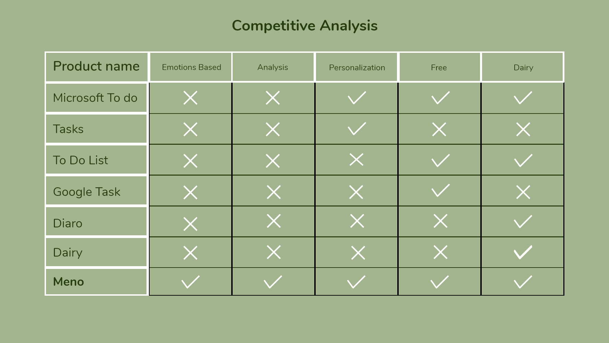
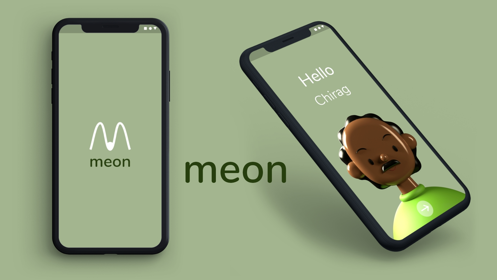
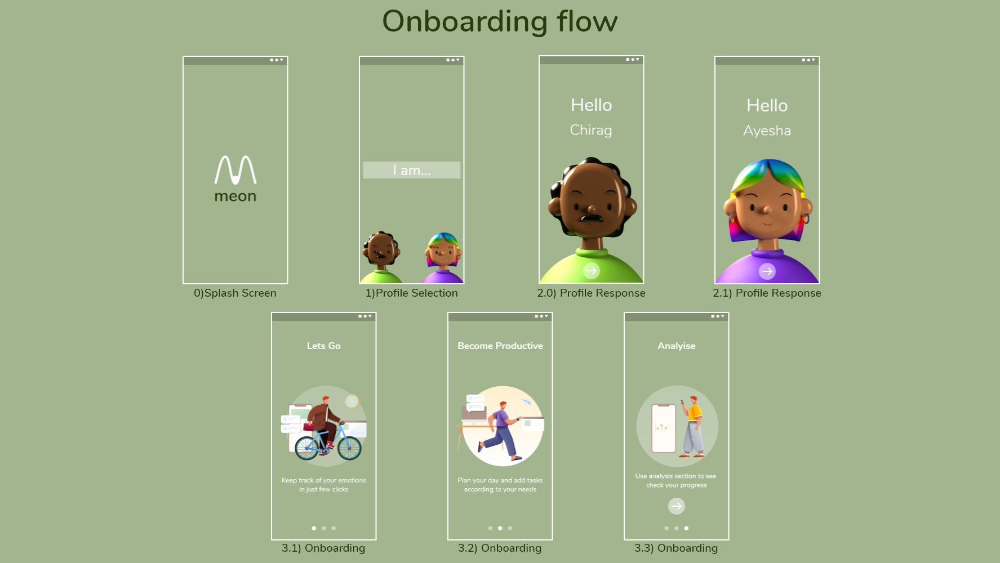
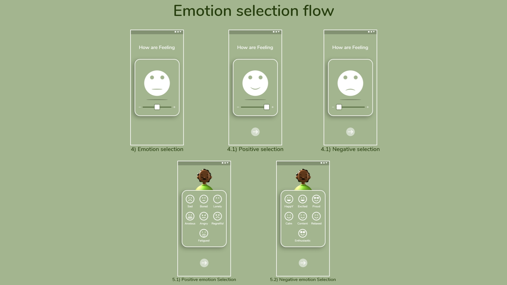
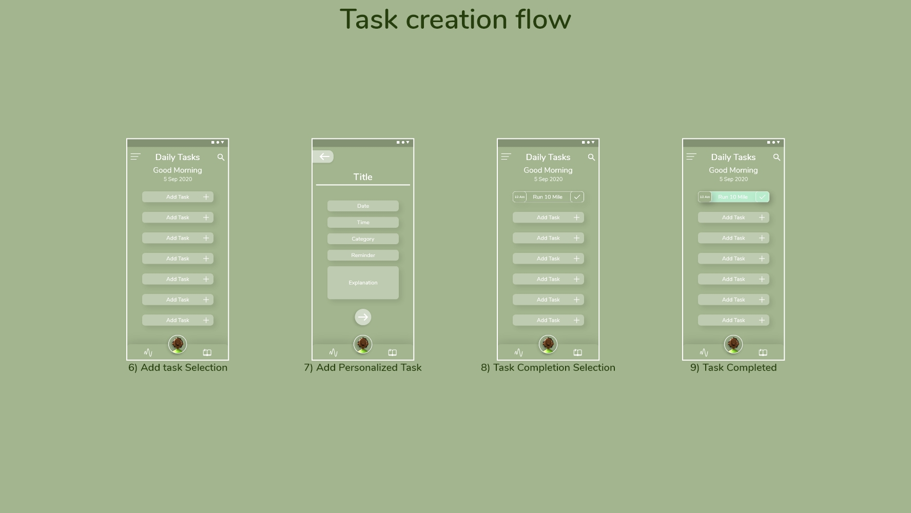

User Research
Interview and survey was conducted with the respective stakeholders, usually present at my college, IT offices, HR's and rest who were using or have used various management apps. My research encompassed:
- Understating the needs of user in a task management app.
- How it should be structured?
- How emotions govern their management throughot the day?
- How they categorize or priortize their daily tasks.
Surveys
Understating the target audience was must, so for that picking the specific target user necessary, specifically i wanted to focus upon two types of users the daily user and the one who used to use task management apps but gave up due to any reason.
So to achieve this i went on conducting an survey that aimed at finding specific audience with whom i wanted to interact. Along with that i wanted to understand the general opinion of users regarding the task management apps.
The purpose to conduct survey was indentify the proper stakeholders.
User Interviews
User Interview this is the most important section of research, my aim for these interviews was to gather as much as i could from the end users and to understand the challenges they face or haved while using other similar apps and how they see this app can make a difference in organizing and prioritizing basically enhancing the productivity in theri daily life.
So for crisp understanding I divided my Interviews into two categories:
- Category 1:Current daily Users
- Category 2: Earlier users
My inferences after conducting the interviews were:
- Category 1:
- Most of them felt that categorization of task was not in their hand.
- They usually don't maintain it on daily basis but they wanted to do so.
- On an average they used to have 5-6 items in their task list
- They could not analyze their performance as most of the apps doesn't keep a track on it.
- Around 90% of them felt that their morning mood governs how they manage their whole day
- One of them wished that the app could have a pre notification, alarm or alert before the task deadline.
- Most of them agreed on the idea of keeping a track on their emotions evey morning and night.
- An analysis section would help them improve upon their productivity.
- Few them were using another app for diary along with a task management app
- Category 2:
- Most of them left the task management apps because they lacked motivation in maintaining the task list everyday
- Some of them found the interface of the apps very confusing and they didn't developed familiarity with it easily.
- Most of them wanted to switch back to task management apps but wanted something that was a lot easier to use.
- Showed interest in having an app that could track their emotions.
Competitive analysis
I thoroughly went through the competative analysis of other apps present in the market of similar niche. All these apps exist in the market and except google tasks evrey task management apps interface is quite difficult to get famalir with but it lags in various other departments such as pesonalisation, analysis etc.

Design Principles
- Categorization:Allowing the user to categorize the items according his needs.
- Individuality: Allowing the user to customize the experience based on their choices
- Reflective: Allowing user to trigger reflective emotions basically giving user a sense of response towards their stimuli.
- Consistency: Provinding user an experience that makes sure elements in UI are uniform and it develops a sense of control, familiarity and reliablity.
- Review: Allow the user to analyze how he/she is performing.
The Solution
Meno app is an Emotion tracking task management cum diary app that allows the user to become their own incharge and define, personalize and categorize the items according his/her specific needs. It allows the user to become more efficient and productive by keeping a track on his/her performance.
The user easily adapts to the familiarity of the interface and adjusts it according to his/her demands.

The Concept for Visulal Design
Final Visual Design


